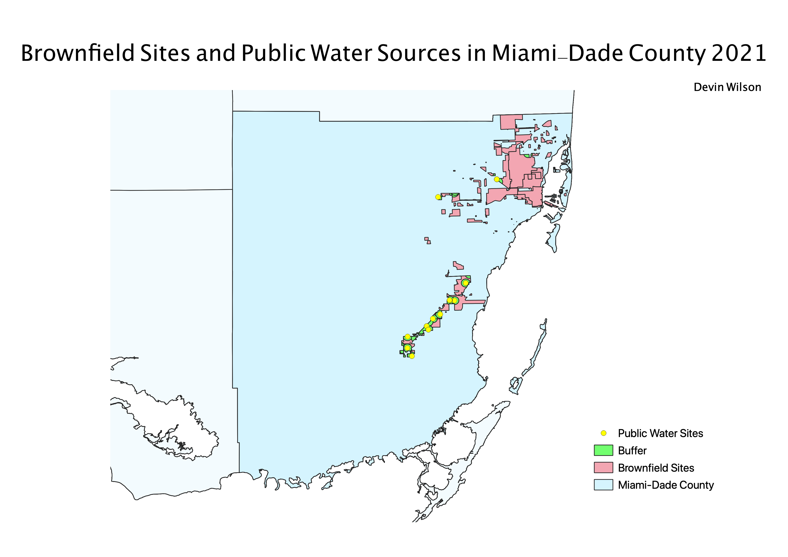
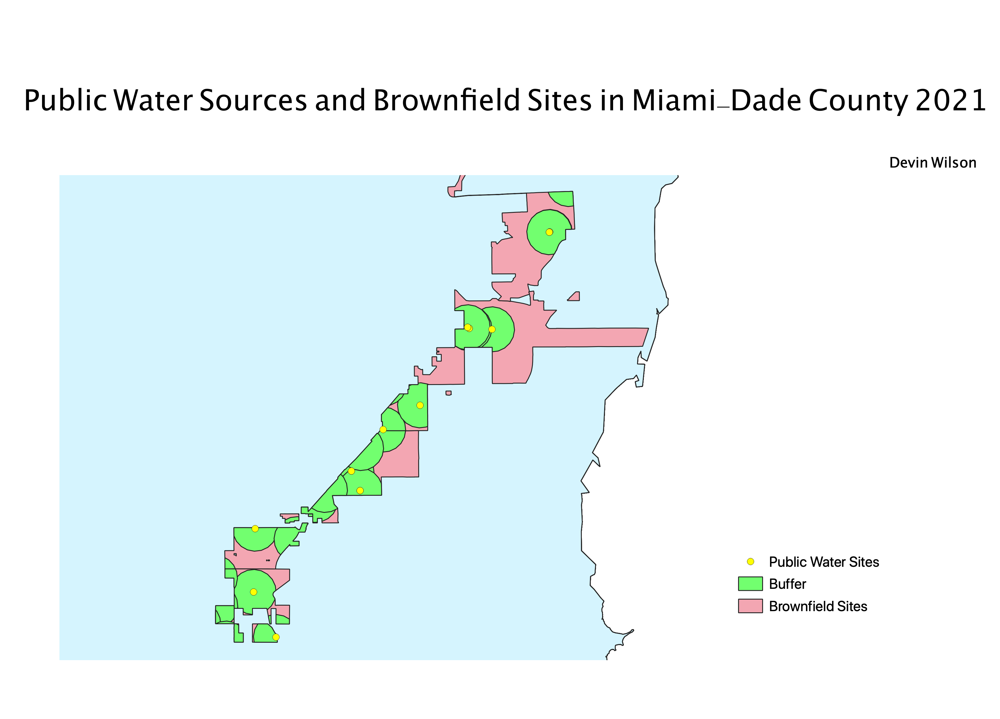
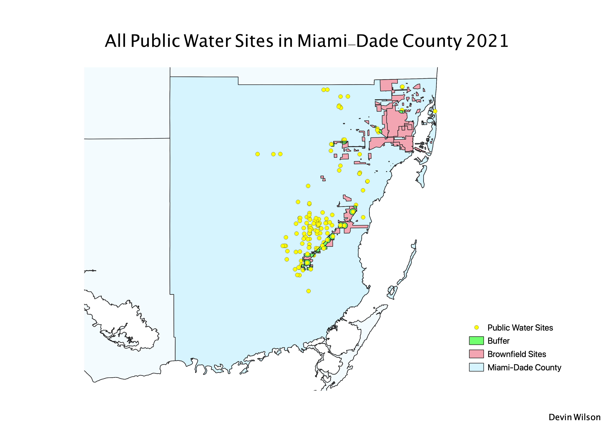

Homework 10: Public Water Sources located in Brownfield Sites
Devin Wilson
My map depicts the location of brownfield sites and public water sources within Miami-Dade county. The high density of public water sources located in and around brownfield sites
was concerning. Brownfield sites are land which was previously used for industrial purposes and now contains hazardous waste and contamination. These sites can potentially contaminate sources of
drinking water with pollutants and harm residents.



I used the buffer tool to show a 2 kilometer radius surrounding each water source. I then used the intersection tool on the brownfield layer, county map,
and water source points. I chose to display both a zoomed out and close up map to best show the location and density of the water sources in the brownfield areas.
I also included a map showing all of the water source points in Miami-Dade county. I chose to include this in order to portray a better depiction of the distribution of water sources in the area.
Data used for this project
Link to text file including all source links
Link to geoJSON for Buffer
Link to geoJSON for Intersection